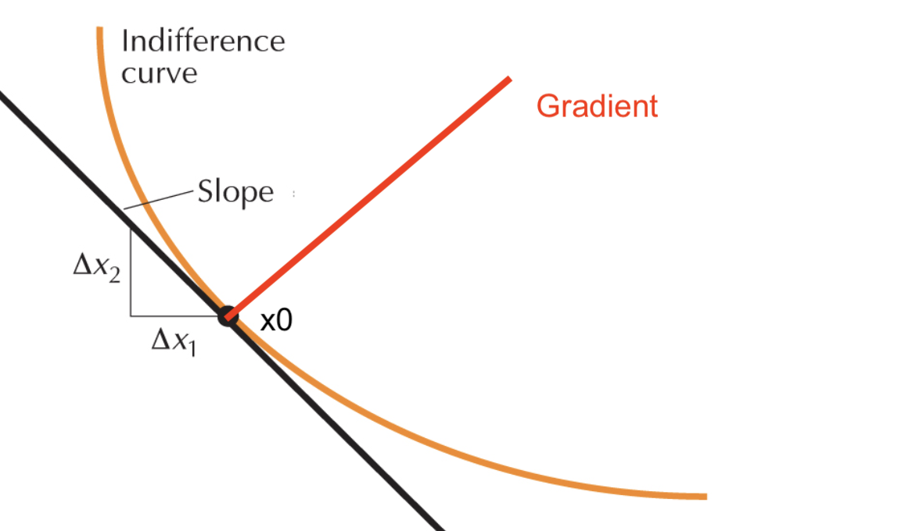

17.09.2026 Constrained Optimization¶
Maths Refresh¶
Geometric Interpretaion of Gradient
Rate of change of \(u(x_1,x_2)\)
at point \(x^*\)
in direction \(v=(v_1,v_2)\)
Derive (Vector Multiplication) $\( g'(0) = ( \frac{\delta u}{\delta x_1}(x^*) \ \ \ \frac{\delta u}{\delta x_2}(x^*) ) \binom{v_1}{v_2} = D u(x^*)v \)\( This is the gradient: \)Du(x^) = \nabla u(x^)$
A column vector!
rate of change along direction \(v\)
Another way to write: $\( \nabla u(x^*) v = \begin{bmatrix} \frac{\delta u (x^*)}{\delta x_1} \\ \frac{\delta u (x^*)}{\delta x_2} \end{bmatrix} \times \begin{bmatrix} v1 \\ v2 \end{bmatrix} \)$ To maximize:
Gradient and v should point in same direction
Aka Gradient is the direction to go
except if Gradient = 0 in both directions
Dinis Theorem
Take a point: \(u(x_1^0,x_2^0) = c\)
There is the level curve in proximity: \(u(x_1,x_2) = c\) (think IDK)
Then we can express \(x_2\) as \(x_1\): \(f (x_2) = f(x_1)\)
Applied: Slope of the tangent on Indifference Curve around Point
Now: Gradient of Function = orthogonal to level curve
To get that with matrices (Dot Product)

Constrained Optimization Example¶
Problem
Lagrange Function:
To Solve:
Kuhn-Tucker¶
Now: with new constraints $\( \max u(x_1,x_2) \\ s.t. \ h(x_1,x_2) \le b \\ x_1 \ge 0; x_2 \ge 0 \)\( New Complimentary Conditions :) \)\( \left\{ \begin{array}{l} \frac{\delta L}{\delta x_1}(x^*) &= 0 \\ \frac{\delta L}{\delta x_2}(x^*) &= 0 \\ \frac{\delta L}{\delta \lambda^*} &= 0 \\ \text{Complimentary Conditions:}\\ x_1 \cdot \frac{\delta L}{\delta x_1}(x^*)&= 0 \\ x_2 \cdot \frac{\delta L}{\delta x_2}(x^*)&= 0 \\ \lambda \cdot \frac{\delta L}{\delta \lambda}(x^*)&= 0 \\ \lambda^* &\ge 0 \end{array} \right. \)$
Duality of Problems¶
If target function is linear, this plays a role!
Envelope Theorem¶
If we have a function with a parameter: \(f(x;a)\)
we find an optimum \(x^*(a)\)
we plug that back in
Now derive:
Easy fix: \(\frac{\partial f}{\partial x}=0\) $\( \frac{dV}{da} = \frac{\partial f}{\partial a} \)$ Easy fix for that one